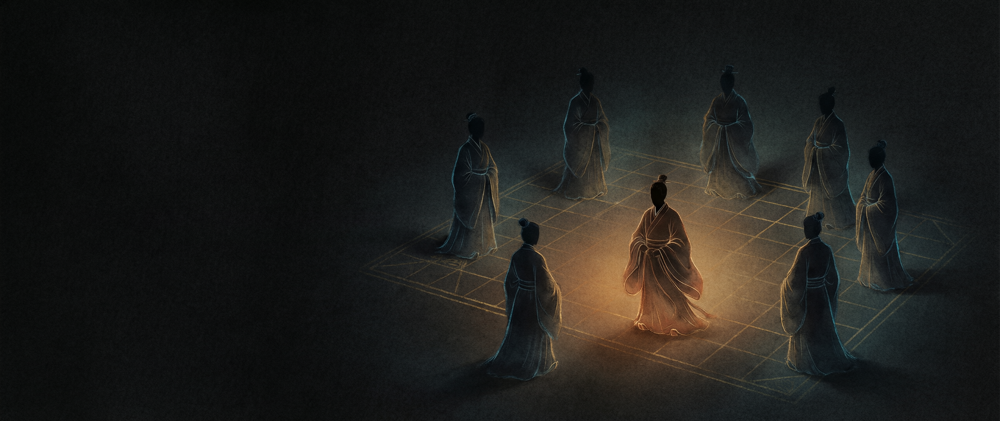
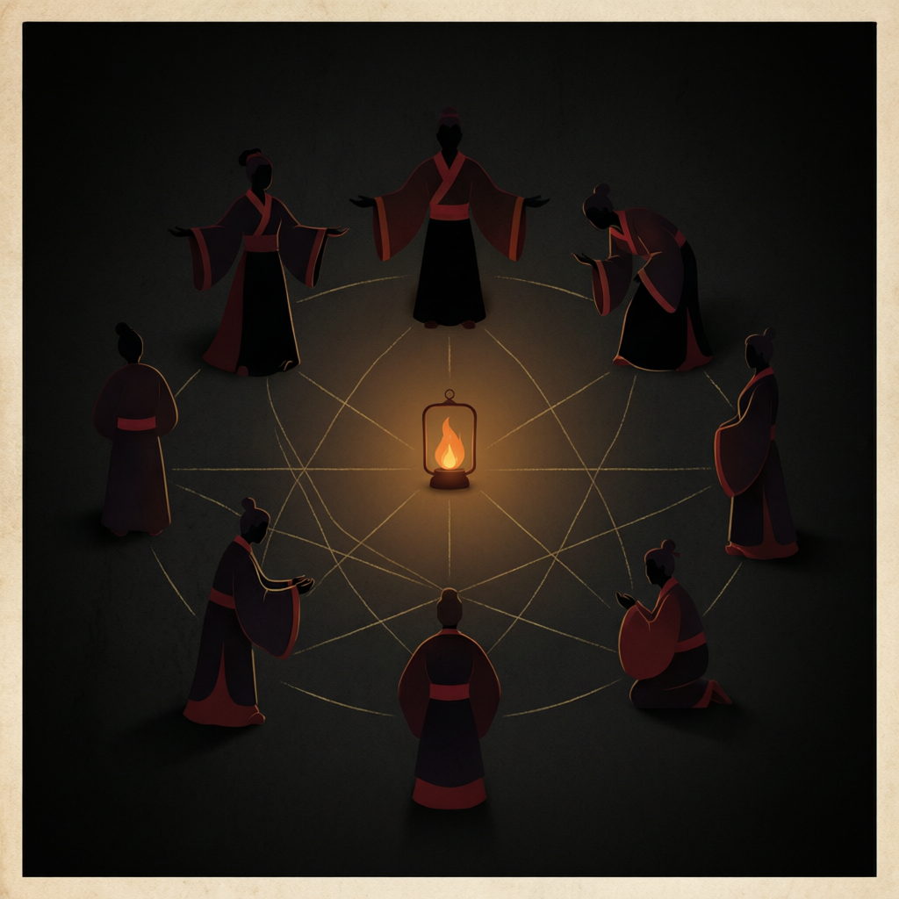
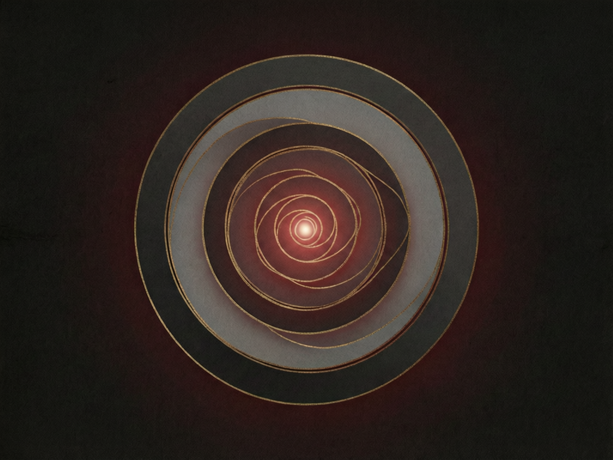
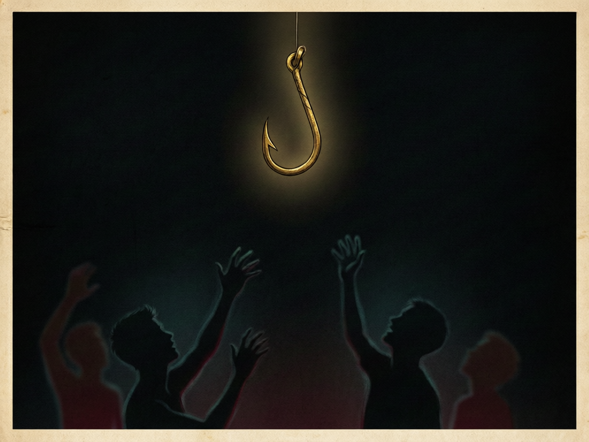

一场局，从来不是一个人做的
江 湖 切 口 · 行 当 口 述 史
正 · 提 · 反 · 脱 · 风 · 火 · 除 · 谣
八张脸，一副骨架，一百年没换过
民国二十三年的冬天，江南落了一场薄雪。
镇东头的当铺来了位客人，穿灰呢子长衫，双手捧一尊白瓷观音。掌柜的接过手，指腹在釉面上轻轻一蹭，眉头便皱了三分。
那客人不会知道，他进门那一刻，柜台后已有三双眼睛在看他；也不会知道，同一尊观音，这半月里已在镇上走过四家铺子。
这一段，我不写手法，只写一件事——
一场局，从来不是一个人做的。
江湖上有句老话：一个人骗不了人，八个人可以。
这话刻薄，却正说在关节上。
近人写骗子，总爱写成"神乎其技"的一双手。实在讲，手上功夫最浅。难的是把人围起来：有人开场，有人引路，有人唱反调，有人望风，有人收尾。
你以为是自己在路上撞见一桩买卖，其实四下里早已站定了人。
旧时江湖，把这一套唤作「千门八将」。
先辨一个词。
「千」在江湖切口里，不作数目讲，作「欺」讲。赌桌上做手脚，叫出千；靠这个吃饭的行当，叫千门。这两个词，比「八将」老得多。
至于八将——正、提、反、脱、风、火、除、谣——这套名目，多见于晚近的江湖切口记述与民间整理。各家抄来抄去，出入不小。民间还有一说，千门供伏羲为祖师，也有说鬼谷子的，听着像那么回事，其实无处可考。
先把话说清楚
正史里并没有「千门八将」这条编制表。它更像一份行当口述史——骗局需要分工，这是真的；给分工起八个名字，是后人的事。名字可以商量，道理不必商量。
所以读这类旧说，我劝你取两头：取它「分工」的道理，弃它「典章」的体面。把它当成一门手艺的口述史看，比当成一部兵法看，稳妥得多。
流传最广的一套，是所谓「上八将」。

八人围一盏灯，各守一面
| 名目 | 干什么 |
|---|---|
| 正将 | 台面上的人。身份体面，言辞熨帖，一场局的脸面都由他担。旧话说他「正大光明行黑路」。 |
| 提将 | 军师。物色人选、布置环节，把话递到该递的地方去。 |
| 反将 | 唱反调的人。扮黑脸、泼冷水、使激将——他越拦，你越要往前。 |
| 脱将 | 善后脱身。退路、处置首尾，最早想好，最后露面。 |
| 风将 | 望风与打探。目标的家底、癖好、行踪，都从这条线上来。 |
| 火将 | 硬的一手。镇场、恐吓，必要时动手。文的不成，由他接。 |
| 除将 | 清理障碍。这一角最阴，旧书里往往说得含糊——正因为不可说。 |
| 谣将 | 造势传话。把假的传成真的，把「听说」传成「都知道」。 |
列完这张表，要紧的是下一句——
八将不是八个人
小局一人兼数角，扮正将的顺带递两句反话；大局一角又分数人，单一个「谣」，就能雇一街的嘴。
所谓「八」，是分工的名目，不是人头数。看穿这一层，才算摸到门槛——酒桌上那位最热心的「朋友」，可能既是提将，也是谣将。
把八将收拢起来看，一场局的骨架，不过五段。

五环向内，收于一点
一 造势 机会不是找上门的，是自己长出来的。先有风声，后有人。
二 引入 必有人替你引路，且这人不提钱。引路的不图你——这是头一道迷魂汤。
三 激将 让你自己说服自己。反将在此发力：他越劝你别去，你越觉得非去不可。
四 收口 在你最确信、最不肯回头的那一瞬落闸。
五 脱身 局散得比你以为的早。等你回过神，八个人已在八条街上。
看着玄，其实五段都在对付同一件东西——你的判断力。
所以防它本不难，难在事到临头，还肯慢那半步。
此外还有「下八将」一说，名目更杂——有作撞、流、天、风、种一类的，各家并不统一。又有「千门一百零八局」的说法，排得整整齐齐，看着极像真传。
越是排得齐整、编号成套的，越可能是后人编的。真正的江湖切口，本是散在口耳之间的粗胚，哪来这般工整。
这不是贬它。口述史自有口述史的价值——它记下的是「人怎么想」，不是「编制怎么设」。分清这一层，读起来便不糊涂。

最漂亮的钩子，从不露出钩尖
说回今天。民国那尊白瓷观音早不知去向，套路却换了衣裳，在手机屏幕上接着开花。
旧时八将，今日八张脸。辨它，有五条可记：
🔸 机会从不请你。凡是「恰好让你赶上」的好事，先问一句：谁在安排。
🔸 引路人何以不图你。中间人不图利，必另有人图。
🔸 情绪先到，事实后到。催你快、怕你问、劝你别查的，都是要你别想。
🔸 只有你在场的「公平」。规则由一方定、一方验，那不是规则，是绳套。
🔸 退出成本忽然变高。真机会，不怕你走。
千门八将最厉害的一招，
从来不是骗术，
是让人相信自己占了便宜。
一百年过去，观音换了手机，长衫换了西装，八个人还是八个人。
他们唯一没变的本事，是让你觉得——是你自己在做决定。
识得此节，便已站在门外了。
留 个 话 头
你见过最像「局」的一件事是什么？
评论区说说——说破无毒。
觉得有用，点个「在看」
转给那个总被说「你太好说话」的朋友